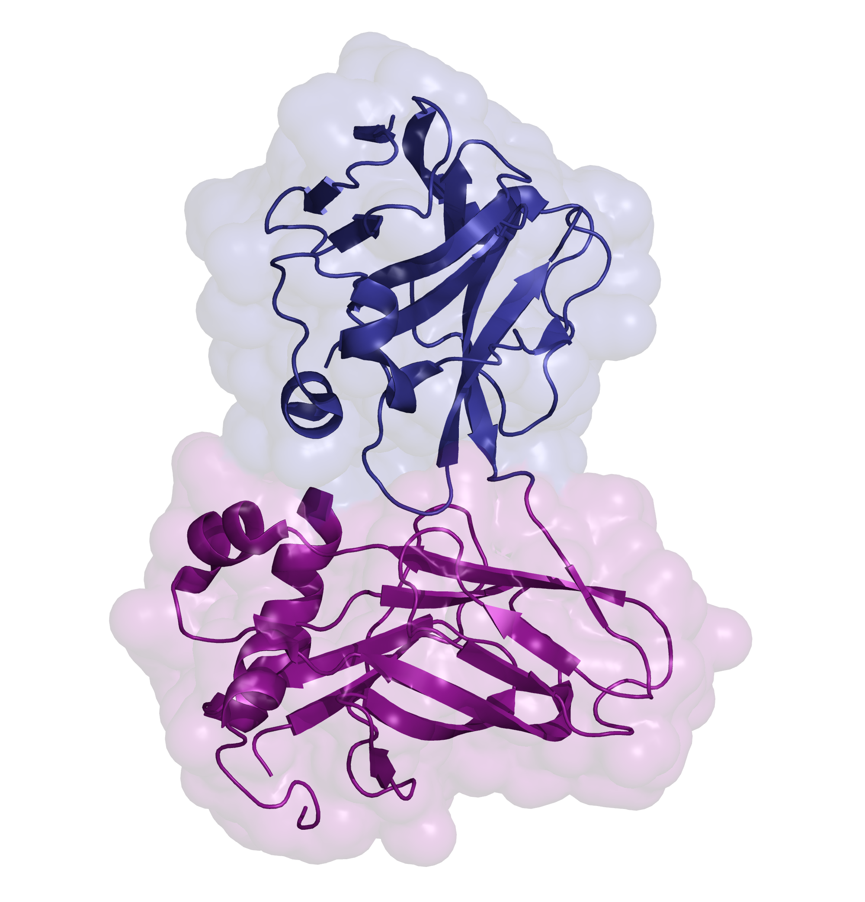

The metazoan cell membrane is highly organized. Maintaining such organization and preserving membrane integrity under different conditions are accomplished through intracellular tethering to an extensive, flexible protein network. Spectrin, the principal component of this network, is attached to the membrane through the adaptor protein ankyrin, which directly bridges the interaction between β-spectrin and membrane proteins. Ankyrins have a modular structure that includes two tandem ZU5 domains. The first domain, ZU5A, is directly responsible for binding β-spectrin. Here, we present a structure of the tandem ZU5 repeats of human erythrocyte ankyrin. Structural and biophysical experiments show that the second ZU5 domain, ZU5B, does not participate in spectrin binding. ZU5B is structurally similar to the ZU5 domain found in the netrin receptor UNC5b supramodule, suggesting that it could interact with other domains in ankyrin. Comparison of several ZU5 domains demonstrates that the ZU5 domain represents a compact and versatile protein interaction module.